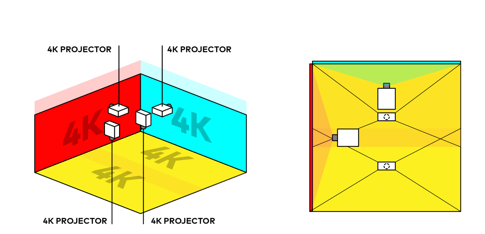

Anamorphic Projection Mapping · Cinema4D · MWC 2022
MWC Samsung 2022
Our team worked on Samsung's Galaxy event at Mobile World Congress 2022 in Barcelona. We focused on creating the anamorphic projection mapping piece featuring Samsung's brand message — "Life opens up with Galaxy: Innovation that opens possibilities, Open experiences, Trusted performance open to all, Positive impact toward an open world" — Openness.
Setup: 2 walls + 1 floor, with 4 projectors. Getting the visual illusion right was especially challenging because the space was compact and viewers needed to stand at a precise viewpoint to get the full anamorphic effect.
I built the scene setup and animations in Cinema4D, and also animated the products for the new Galaxy series launch — rendered using C4D Octane's toon shader.

This is what it looked like on-site!

Galaxy series product animation